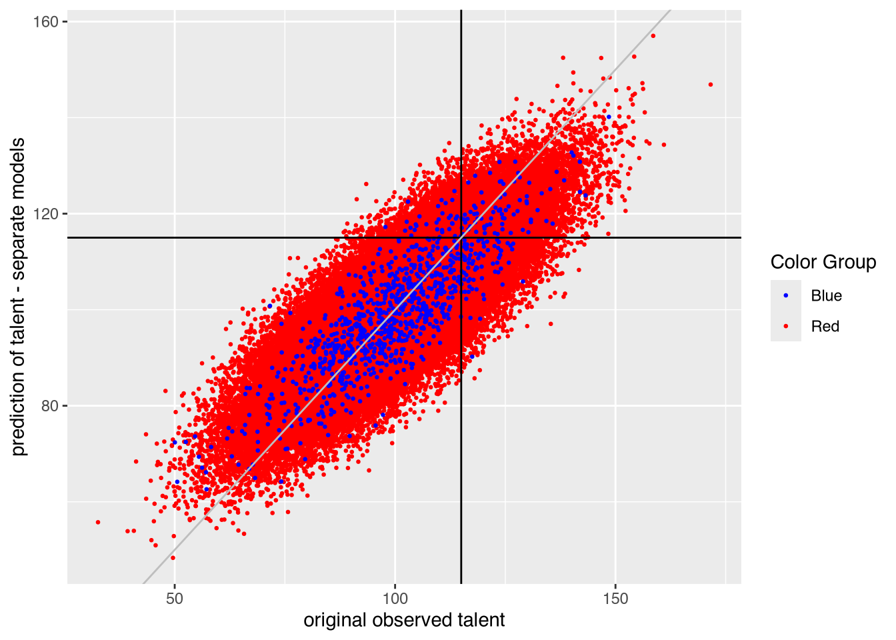

Algorithmic Bias
Model bias can come from any of a plethora of places. Sometimes it is the training data which are problematic: sampling bias, measurment bias, historical bias, label bias. Sometimes there are problems in the modeling step itself: optimizing for particular criterion, overfitting or underfitting, choice of algorithm. Sometimes the problem can occur while data processing. For example, like here, different feature distributions for variables and imblance in classes.
Algorithmic Unfairness Without Any Bias Baked In by Aaron Roth
The following entry is based heavily on a blog by Aaron Roth Algorithmic Unfairness Without Any Bias Baked In.
Consider an example taken directly (and mostly verbatim) from a blog by Aaron Roth Algorithmic Unfairness Without Any Bias Baked In (Roth 2019). We describe how forced “fairness” can have unintentional consequences.
Set up of the model
In the population, we have only one type of person. They have the same talent, grades, and SAT scores.
talent ~ Normal (100, 15)
grades ~ Normal (talent, 15)
SAT ~ Normal (talent, 15)A particular college wants to admit students with
talent > 115
… but they only have access to grades and SAT which are noisy estimates of talent.
The college sets up a plan for accepting students. Fortunately for the college, they have training data which is a true random sample from the population (and includes all three variables: talent, grades, and SAT). There is no bias in the selection of the training data from the population.
In order to create a model which will help the college decide who to admit, they follow the following steps:
- Run a regression on a training dataset (
talentis known for existing students) - Find a model which predicts
talentbased ongradesandSAT - Choose students for whom predicted
talentis above 115 (for the students who apply to the college)
The dilemma
Unfortunately for the college, there is a flaw in their admission plan. As mentioned previously, there is only one population of students when it comes to their inherent abilities.
- there are two populations of students, the Reds and Blues.
- Reds are the majority population (99%), and Blues are a small minority population (1%)
- the Reds and the Blues are no different when it comes to talent: they both have the same talent distribution, as described above.
- there is no bias baked into the grading or the exams: both the Reds and the Blues also have exactly the same grade and exam score distributions
However, there is one very meaningful difference in the two populations.
The Blues have more money than the Reds, so they each take the SAT twice, and report only the highest of the two scores to the college. This results in a small but noticeable bump in their average SAT scores, compared to the Reds.
Let’s underscore the problem here:
The value of
SATmeans something different for the Reds versus the Blues
Another way to describe the problem is to say that the two groups of students have different feature distributions.
What happens?
We start by visualizing the grades and SAT scores of the two populations. We can see that, as expected, the Blues have slightly higher SAT scores.
Fitting two models, separately
If we fit the data to the Reds separately from the Blues, we can come up with two separate linear models, one for each population.
Red model (SAT taken once):
## # A tibble: 3 × 5
## term estimate std.error statistic p.value
## <chr> <dbl> <dbl> <dbl> <dbl>
## 1 (Intercept) 33.2 0.152 218. 0
## 2 SAT 0.334 0.00149 224. 0
## 3 grades 0.334 0.00149 225. 0Blue model (SAT is max score of two):
## # A tibble: 3 × 5
## term estimate std.error statistic p.value
## <chr> <dbl> <dbl> <dbl> <dbl>
## 1 (Intercept) 25.3 1.60 15.8 2.04e- 50
## 2 SAT 0.432 0.0161 26.7 3.35e-119
## 3 grades 0.277 0.0154 18.0 6.83e- 63Using the separate linear models, we generate new data, some Red and some Blue, and measure whether or not the models are biased. We want to know how well the models will be able to predict if a student has talent > 115.
From the plot below, on new students, we do not see any obvious bias. That is, the Blue points seem to be just as likely to be predicted to be a false positive as the Red points. Similarly, the Blue points seem to be just as likely to be predicted to be a false negative as the Red points.

We can quantify the error rates across the Blue and Red groups.
tpr = talent > 115 & predicted > 115 / talent > 115
fpr = talent < 115 & predicted > 115 / talent < 115
fnr = talent > 115 & predicted < 115 / talent > 115
error = fp + fn / total
## # A tibble: 2 × 5
## color tpr fpr fnr error
## <chr> <dbl> <dbl> <dbl> <dbl>
## 1 Blue 0.503 0.0379 0.497 0.109
## 2 Red 0.509 0.0378 0.491 0.109Can we fit two models?
Fitting two models doesn’t seem right? After all, there are laws against using protected classes to make decisions for housing, jobs, money loans, college, etc.
Fitting one model
What happens if we use the training data to come up with a single model and use it to predict for both the Blues and the Reds?
## # A tibble: 3 × 5
## term estimate std.error statistic p.value
## <chr> <dbl> <dbl> <dbl> <dbl>
## 1 (Intercept) 33.1 0.151 219. 0
## 2 SAT 0.334 0.00148 225. 0
## 3 grades 0.334 0.00148 226. 0We notice that the coefficients look like the Red model. That’s because Reds are the majority class, and so their data dominate the training data.
Using one model, we can assess how the error rates change. Already, the plot shows that the Blue points are no longer centered in the middle of the Red points. The Blue points are predicted
One model:
## # A tibble: 2 × 5
## color tpr fpr fnr error
## <chr> <dbl> <dbl> <dbl> <dbl>
## 1 Blue 0.619 0.0627 0.381 0.112
## 2 Red 0.507 0.0375 0.493 0.109Two separate models:
## # A tibble: 2 × 5
## color tpr fpr fnr error
## <chr> <dbl> <dbl> <dbl> <dbl>
## 1 Blue 0.503 0.0379 0.497 0.109
## 2 Red 0.509 0.0378 0.491 0.109What did we learn?
with two populations that have different feature distributions, learning a single classifier (that is prohibited from discriminating based on population) will fit the bigger of the two populations
depending on the nature of the distribution difference, it can be either to the benefit or the detriment of the minority population
no explicit human bias, either on the part of the algorithm designer or the data gathering process
the problem is exacerbated if we artificially force the algorithm to be group blind
well-intentioned “fairness” regulations prohibiting decision makers form taking sensitive attributes into account can actually make things less fair and less accurate at the same time
Simulation
Only one dataset under one set of conditions has been simulated in the example. To fully understand the extent of the bias, we would need to do a larger simulation which might include:
- repeat analysis to measure the variability of the error rates.
- change the number of times a student can take the
SAT - change the proportion of the population which is Blue
- change the original relationship –
talentcan be more / less dependent ongradesthanSAT
What else would you like to know about the data, model, and simulation?
References
Roth, Aaron. 2019. “Discussion of Unfairness in Machine Learning.” http://aaronsadventures.blogspot.com/2019/01/discussion-of-unfairness-in-machine.html.